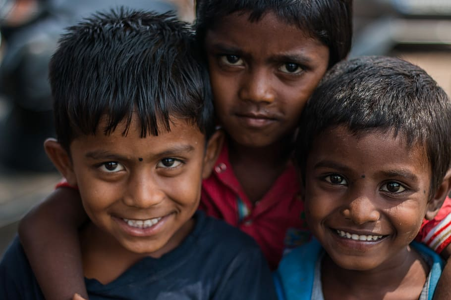

High-income countries leave food on the plate, and low- and middle-income countries leave food in the field or lose it in production. This results in millions of malnourished children dying each year from a preventable cause. Hunger and malnutrition create a self-sustaining barrier that keeps people stuck in poverty
THERE IS A VIRUS THAT HAS KILLED SO MANY PEOPLE FOR YEARS. THAT VIRUS IS CALLED HUNGER AND ITS VACCINE IS FOOD. HOWEVER, NO ONE TALKS ABOUT IT. BECAUSE THIS VIRUS DOESN'T KILL THE RICH
Don't waste food.
Someone is sleeping on an empty stomach
The smile of a small child with food is a magical moment that encapsulates pure joy and innocence. It is a heartwarming sight that radiates happiness from their sparkling eyes to their rosy cheeks. As they take a bite of their favorite treat or savor a mouthful of a home-cooked meal, their genuine delight is palpable.
Donating even a small amount to help the needy can have a profound impact on the lives of those facing hardship and adversity. It is an act of compassion and solidarity that transcends borders and unites us in our shared humanity. Your generous contribution can provide much-needed resources for those struggling to access basic necessities like food, clean water, shelter, and healthcare. It can empower vulnerable communities, support educational opportunities for underprivileged children, and aid in disaster relief efforts during times of crisis.
 K S SURIYA
K S SURIYA